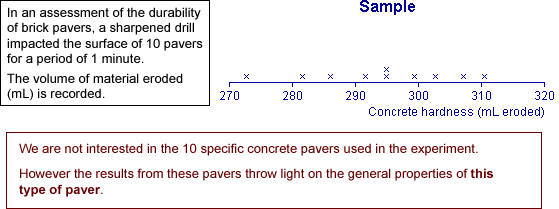

Exploratory and descriptive analysis
Sometimes we are interested in a specific collection of individuals (or other units). When data are collected from these individuals, it is sufficient to describe the distribution of values with graphical and numerical descriptive statistics. We have no interest in generalising from this to throw light on a 'wider population of individuals'.
Highest points in US states
The stacked dot plot below shows the heights (feet) of the highest points in each of the states in the USA. Click on crosses to determine the names of the corresponding states.
We are only interested in describing these specific 50 states, not on generalising to any 'wider population of states'.
Generalising from data
In contrast, with most data sets, the specific 'individuals' from whom data were collected are of little interest.
Data are often 'representative' of something more general.
The main aim with such data is to generalise from the data.
Examples
The following data sets were collected to provide information about something more general than the specific 'individuals' from whom the values were collected.

We can (and should!) still use exploratory graphical and numerical summaries to help understand the distribution of values in data sets such as these above. The data sets give information from which we can try to generalise.
However our data give incomplete information about what is underlying the data — with more data, we would be able to do better.
We need additional methodology to describe what is meant by this 'generalising' from the data and to describe the potential errors due to the limited amount of available data.